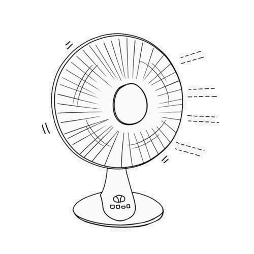
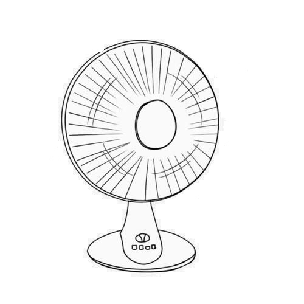

<div *ngIf="aaa==2" class="d-flex justify-content-center">
    
</div>
<div *ngIf="aaa==1" class="d-flex justify-content-center">
    
</div>
<div *ngIf="aaa==0" class="d-flex justify-content-center">
    
</div>
<div class="d-flex justify-content-center">
    <button type="button" class="btn btn-outline-success" (click)="turnOn()">低档</button>
    <button type="button" class="btn btn-outline-warning" (click)="turnHigh()">高档</button>
    <button type="button" class="btn btn-outline-danger" (click)="turnOff()">关闭</button>
    <button type="button" class="btn btn-outline-info" (click)="back()">返回</button>
</div>